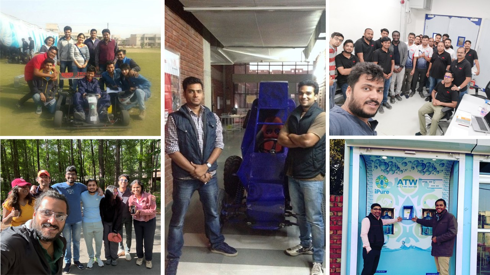

Developed a macro-based tool in Excel using VBA to automate emission cycle test reporting for commercial diesel engines.
I'm Shubhendra Pratap Singh, and my career is built on one principle: when faced with a challenge, I don't step back — I build forward.
Engineering, to me, has never been about ticking boxes or following fixed paths. It's about stepping into complexity, holding onto purpose, and pushing through when most stop. I’ve thrived not in ease, but in adversity — because that’s where real innovation lives.
At Club First, I was tasked with creating a Water Purification and Vending System (IWPVS) for rural India. Most systems failed under fluctuating power, extreme humidity, and harsh field conditions. Instead of replicating existing designs, I started from scratch — engineering a robust, modular, and self-sufficient solution that replaced over 20 manual plants. It wasn’t just about building a machine — it was about refusing to settle for “good enough.”
Later, during my time at FEV India, I spotted a problem no one else owned: time-consuming manual workflows in calibration reporting. What started as an after-hours experiment became a macro-based tool that automated repetitive tasks, slashed analysis time, and empowered teams across departments. Again, no one asked for it — but that didn’t matter. I don’t wait for instructions when I see an opportunity to solve something better.
Today, at Clemson University, I continue that mindset through advanced research — developing bio-inspired solutions like the Whale Bot to reimagine how we study marine life, focusing on humane tagging, sustainable energy, and intelligent design integration. Because the toughest problems — the ones with no clear answers — are the ones I’m drawn to the most.
My story isn’t about shortcuts or easy wins — it’s about persistence, reinvention, and delivering solutions that matter. If you're looking for someone who’s all-in, even when the path is uphill — that’s who I am.

Developed a macro-based tool in Excel using VBA to automate emission cycle test reporting for commercial diesel engines.

Led the design and development of an electric go-kart as part of a national collegiate competition.

Currently developing “Whale Bot” a humane and long-duration whale tagging system inspired by suckerfish.
If you find my work innovative and meaningful, I’d be glad to connect. I’m passionate about design and engineering.
Whether you're working on something exciting or need support where my skills can contribute, feel free to reach out via email or text. I’m always open to meaningful collaboration and new opportunities